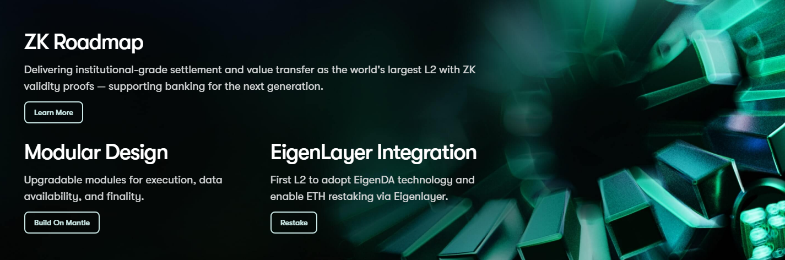

①
Set up Mantle Network (RPC + Chain ID)
Add Mantle to your wallet using official parameters. If your ETH “disappears,” it’s often on the right address but you’re viewing the wrong network.

This is a practical, security-first guide to moving ETH to Mantle: how to bridge ETH from Ethereum to Mantle Network, what fees you actually pay (L1 + L2 gas), how to set up your wallet (RPC / Chain ID), what to expect for deposit and withdrawal timing, and how to troubleshoot common “missing ETH / pending transfer / wrong network” issues.
Add Mantle to your wallet using official parameters. If your ETH “disappears,” it’s often on the right address but you’re viewing the wrong network.
Use the official bridge, choose ETH, confirm destination is Mantle, and start with a small test transfer before scaling.
Wallet UIs can lag. Verify the deposit tx on Ethereum and confirm ETH balance/activity on Mantle explorers.
Moving ETH back to Ethereum can take time. Keep ETH on Ethereum for finalize steps and don’t expect instant exits.
ETH to Mantle typically refers to bridging ETH from Ethereum (L1) to Mantle Network (L2), then using ETH on Mantle for swaps, liquidity, lending, and other apps. The operational goal is simple: use the correct bridge URL, confirm chain direction, and verify results via explorers.
You want to use Mantle apps and need ETH available on Mantle for gas and liquidity routes.
If you bridge too much ETH, you can strand yourself without gas on Ethereum for withdrawals or finalize steps. Always keep a buffer.

When you move ETH to Mantle, you’ll usually experience two different flows: Deposit (Ethereum → Mantle) and Withdraw (Mantle → Ethereum). Deposits often feel faster because funds move into L2 after confirmations. Withdrawals can take longer because funds must be finalized back on Ethereum.
| Direction | What happens to ETH | Common mistake |
|---|---|---|
| Deposit (L1 → L2) | ETH becomes available on Mantle after confirmations | Looking at Ethereum network in wallet and thinking ETH is missing |
| Withdraw (L2 → L1) | ETH withdrawal follows L2 → L1 finalization steps | Assuming instant exit; not keeping ETH on L1 for gas |
The total cost to bridge ETH to Mantle is mostly gas-driven. Even if the bridge UI shows a single estimate, operationally you should think in two layers: Ethereum gas for L1 execution and Mantle gas for L2 usage after arrival.
Correct network settings prevent most “ETH missing on Mantle” problems. Mantle Mainnet is commonly configured with Chain ID 5000, RPC https://rpc.mantle.xyz, and explorers like mantlescan.xyz.
| Parameter | Value | Why it matters |
|---|---|---|
| Network name | Mantle | Ensures you view the correct chain when checking ETH |
| RPC URL | https://rpc.mantle.xyz | Wallet routing and transaction submission |
| Chain ID | 5000 | Critical for chain selection and avoiding spoof networks |
| Currency symbol | MNT | Gas token used for many L2 actions on Mantle |
| Explorers | https://mantlescan.xyz / https://explorer.mantle.xyz | Verification source of truth for ETH movements |
Timing depends on confirmations, bridge mechanics, and L1 execution. As a rule of thumb: deposits (L1 → L2) usually complete sooner than withdrawals (L2 → L1), because withdrawals require additional finalization back on Ethereum.
Deposits are typically faster than withdrawals. Treat withdrawals as a scheduled process rather than an instant transfer.
Finality depends on bridge mechanics and network conditions. Always check the bridge history and explorers for your address.
If your ETH balance looks wrong after bridging, verify in explorers first. Check the deposit transaction on Ethereum, then confirm destination state on Mantle with your address. Wallet token lists and RPC endpoints can lag; explorers remain the source of truth.
Check balances, transfers, and tx status on Mantle.
Open Mantlescan
Alternative explorer for detailed tx data and contract verification.
Open Mantle Explorer
Use official Mantle resources and reputable security references to verify links, network settings, and bridge behavior:
ETH to Mantle means bridging ETH from Ethereum to Mantle Network so you can use it on Mantle. The safest workflow is: verify the official bridge → test transfer → verify on explorers → scale.
Use the official Mantle Bridge at app.mantle.xyz/bridge and bookmark it to reduce phishing risk.
Mantle Mainnet is commonly configured with Chain ID 5000. Confirm parameters using official Mantle sources or trusted registries like Chainlist.
A commonly used RPC endpoint is https://rpc.mantle.xyz. If your wallet UI lags, try another trusted RPC and verify on explorers.
Many Mantle transactions use MNT as gas. Keep a buffer for swaps, approvals, retries, and revokes. Don’t bridge in without planning gas for your first actions.
Deposits move ETH into L2 after confirmations. Withdrawals must be finalized back on Ethereum and can take longer due to rollup withdrawal mechanics.
Deposit timing depends on Ethereum confirmations and bridge processing. Withdrawals usually take longer because they require L1 finalization. Always confirm current status in the bridge history and explorers.
Switch your wallet to Mantle, verify your address on Mantlescan, and confirm the deposit tx is successful. If explorers show success, it’s usually a wallet network/UI/RPC issue.
Use Mantlescan as the primary explorer and Mantle Explorer (Blockscout) as an alternative. For Ethereum-side steps, use an Ethereum explorer (e.g., Etherscan).
Do a small test deposit, verify on explorers, keep gas buffers on both chains, and avoid bridging your last ETH on Ethereum. Save tx hashes for fast troubleshooting.